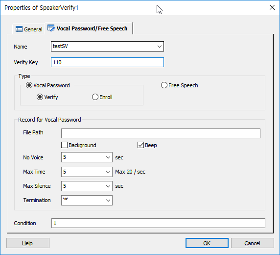

화자인증 아이템 입니다.
화자인증은 Vocal Password와 Free Speech 두가지가 있습니다.
Vocal Password는 화자의 목소리를 녹음하여 서버로 인증을 요청하는 구조이고, Free Speech는 상담 중에 상담원이 인증시작을 하면 그때 부터 상담 중인 화자의 목소리를 녹음하고 서버로 인증을 요청 합니다.
* 이 아이템은 ForCus 4.3 이상 버전에서만 사용 가능 합니다.
ICON
PROPERTIES
 Vocal Password/Free Speech
Vocal Password/Free Speech

Name : 아이템 이름을 지정합니다.(결과 시스템 변수를 참조할 때 사용 합니다)
Verify Key : 재생할 음성 파일을 지정합니다.
Type
Vocal Password Option : Vocal Password 속성을 설정 합니다.
Verify : 화자 인증을 합니다.
Enroll: 등록된 화자가 없을 때 화자를 등록 합니다.(Verify를 먼저하고 나서 결과를 가지고 Enroll을 합니다)
Feee Speech : Free Speech 속성을 설정 합니다.
Record for Vocal Password
• File Name은 자동 생성 됩니다.
File Path : 녹음할 경로를 지정 합니다.(지정 하지 않으면 멘트 파일 폴더에 녹음 파일이 저장 됩니다.)
Background Check Box : 녹음 시 백그라운드로 녹음 합니다.(백그라운드 녹음 시에는 Max Time만 적용됨)
Beep Check Box : 녹음 시작시 녹음 시작 알림음인 "삐~"음의 Play 여부를 설정 합니다.
No Voice :녹음 중 음성 검출이 되지 않는 타임아웃 시간을 설정 합니다.
Max Time : 최대 녹음 시간을 지정 합니다.(화자 인증을 위한 녹음 최대 시간은 20초 입니다.)
Max Silence : 녹음중 최대 묵음 시간을 지정하여 종료 할 수 있도록 합니다.
Termination : 녹음 도중 종료하기 위한 DTMF 를 지정 합니다.
Condition : 화자인증 기능을 실행 하기 위한 조건을 지정 합니다.
RESULT
· 처리 결과 세션 변수
session.command.result : 처리 성공(_SLEE_SUCCESS_), 실패(_SLEE_FAILED_)
session.command.reason : 실패면 실패 오류코드(시스템 상수 참조)
· 아이템 속성 변수(@name 은 Name 항목에서 지정한 이름)
@name.decision : 화자 인증 결과 값
@name.dcsrsn : 화자 인증 결과 이유
@name.watchlistsuspect : 사칭자 명단
RELATED
None.